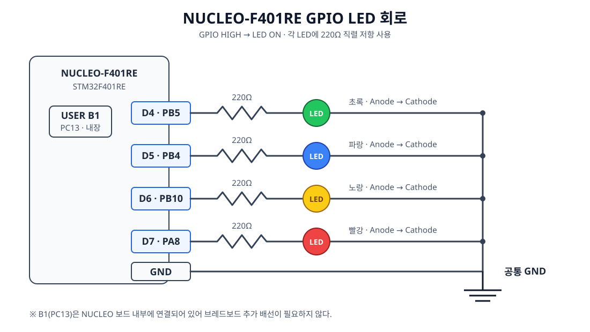

GPIO란?
GPIO는 General Purpose Input/Output의 약자로, 범용 입출력 핀을 의미한다. MCU가 외부 장치와 디지털 신호를 주고받을 때 사용하는 가장 기본적인 인터페이스다.
STM32와 같은 MCU는 GPIO를 통해 LED, 버튼, 센서, 릴레이, 모터 드라이버 등의 외부 장치와 연결된다.
외부 장치와 MCU의 연결
GPIO의 기본 구조
GPIO의 동작은 신호 방향에 따라 Input과 Output으로 구분한다.
| 구분 | 역할 | 신호 방향 |
|---|---|---|
Input | 버튼이나 센서 등의 외부 신호 읽기 | 외부 → MCU |
Output | LED나 릴레이 등의 외부 장치 제어 | MCU → 외부 |
Input
Output
GPIO Output
GPIO Output은 MCU에서 외부 장치로 HIGH 또는 LOW 신호를 출력하는 방식이다. 현재 프로젝트에서는 LED를 제어할 때 사용했다.
/* GPIO 출력을 HIGH로 변경 */
HAL_GPIO_WritePin(GPIOA, GPIO_PIN_5, GPIO_PIN_SET);
/* GPIO 출력을 LOW로 변경 */
HAL_GPIO_WritePin(GPIOA, GPIO_PIN_5, GPIO_PIN_RESET);현재 LED 회로에서는 SET일 때 LED가 켜지고 RESET일 때 꺼진다.
GPIO Input
GPIO Input은 버튼이나 센서에서 발생한 디지털 신호를 MCU가 읽는 방식이다. 현재 프로젝트에서는 PC13에 연결된 사용자 버튼의 상태를 읽을 때 사용했다.
GPIO_PinState state;
state = HAL_GPIO_ReadPin(GPIOC, GPIO_PIN_13);반환값은 GPIO_PIN_SET 또는 GPIO_PIN_RESET이며 조건문으로 입력 상태를 판단할 수 있다.
if (HAL_GPIO_ReadPin(GPIOC, GPIO_PIN_13) == GPIO_PIN_SET)
{
/* 버튼 입력 처리 */
}HIGH와 LOW
| 상태 | 논리값 | 전압의 의미 |
|---|---|---|
HIGH | 1 | 높은 전압 상태 |
LOW | 0 | 낮은 전압 상태 |
3.3V MCU에서는 개념적으로 HIGH는 3.3V에 가까운 상태, LOW는 0V에 가까운 상태다. 실제 판정 전압 범위는 MCU 데이터시트에서 확인해야 한다.
GPIO Port와 Pin
STM32의 GPIO는 PA0, PA5, PB3, PC13처럼 Port와 Pin 번호를 조합해 표현한다.
| 표기 | 의미 |
|---|---|
P | Port |
A | Port A |
5 | Pin 5 |
HAL_GPIO_WritePin(GPIOA, GPIO_PIN_5, GPIO_PIN_SET);Pull-up, Pull-down과 Floating
입력 핀에 HIGH나 LOW를 만들어 주는 신호가 없으면 입력 상태가 불확실해질 수 있다. 이를 Floating 상태라고 한다.
Pull-up: 저항을 통해 입력의 기본 상태를HIGH로 유지한다.Pull-down: 저항을 통해 입력의 기본 상태를LOW로 유지한다.
| Pull-up 버튼 상태 | GPIO 입력 |
|---|---|
| 버튼을 놓음 | HIGH |
| 버튼을 누름 | LOW |
현재 프로젝트의 PC13 버튼은 내부 Pull-up이나 Pull-down을 사용하지 않는다.
GPIO_InitStruct.Pin = USER_BUTTON_Pin;
GPIO_InitStruct.Mode = GPIO_MODE_INPUT;
GPIO_InitStruct.Pull = GPIO_NOPULL;GPIO 입력과 출력의 연결
if (HAL_GPIO_ReadPin(GPIOC, GPIO_PIN_13) == GPIO_PIN_SET)
{
HAL_GPIO_WritePin(GPIOA, GPIO_PIN_5, GPIO_PIN_SET);
}
else
{
HAL_GPIO_WritePin(GPIOA, GPIO_PIN_5, GPIO_PIN_RESET);
}위 코드는 GPIO의 기본 관계를 보여 주는 예시다. 현재 프로젝트에서는 여기에 50ms 디바운싱과 LED 상태 전환을 추가해 구현했다.
실제 구성한 GPIO 회로

| NUCLEO 핀 | STM32 GPIO | 연결 | 동작 |
|---|---|---|---|
| D4 | PB5 | 220Ω → 초록 LED → GND | HIGH에서 켜짐 |
| D5 | PB4 | 220Ω → 파랑 LED → GND | HIGH에서 켜짐 |
| D6 | PB10 | 220Ω → 노랑 LED → GND | HIGH에서 켜짐 |
| D7 | PA8 | 220Ω → 빨강 LED → GND | HIGH에서 켜짐 |
네 LED의 캐소드는 공통 GND 레일에 연결한다. USER 버튼 B1(PC13)은 보드에 내장되어 있으므로 추가 배선하지 않는다.
GPIO 출력으로 LED 점멸하기
구현 목표
NUCLEO-F401RE의 D4(PB5)에 연결한 초록색 LED를 1초 간격으로 켜고 끈다.
핵심 코드
while (1)
{
HAL_GPIO_TogglePin(GREEN_LED_GPIO_Port, GREEN_LED_Pin);
HAL_Delay(1000);
}코드 설명
GREEN_LED_GPIO_Port와 GREEN_LED_Pin은 각각 GPIOB와 GPIO_PIN_5를 의미한다. 따라서 다음 함수는 PB5의 현재 출력 상태를 반전한다.
HAL_GPIO_TogglePin(GREEN_LED_GPIO_Port, GREEN_LED_Pin);- 현재 출력이
LOW이면HIGH로 변경한다. - 현재 출력이
HIGH이면LOW로 변경한다.
이 회로에서는 PB5가 HIGH일 때 LED가 켜지고, LOW일 때 LED가 꺼진다.
HAL_Delay(1000);HAL_Delay()의 단위는 밀리초이므로 1000은 1초를 의미한다. LED의 상태를 반전한 뒤 1초간 기다리고, while (1)에 의해 이 동작을 계속 반복한다.
LED 상태는 1초마다 바뀌며, 켜졌다가 다시 켜질 때까지의 전체 점멸 주기는 2초다.
동작에 필요한 GPIO 초기화
MX_GPIO_Init();이 함수는 GPIOB의 클록을 활성화하고 PB5를 Push-Pull 출력 핀으로 설정한다. 또한 시작 시 LED가 꺼져 있도록 출력값을 GPIO_PIN_RESET으로 초기화한다.
이번 구현에서 배운 점
- STM32 펌웨어는 하드웨어를 초기화한 후
while (1)에서 원하는 동작을 반복한다. PB5는 GPIOB Port의 5번 Pin을 뜻한다.- GPIO Pin은 사용하기 전에 출력 모드로 초기화해야 한다.
HAL_GPIO_TogglePin()은 현재 GPIO 출력 상태를 반전한다.HAL_Delay()를 사용하면 밀리초 단위의 간단한 점멸 간격을 만들 수 있다.
PB5를 GPIO 출력으로 설정하고 출력 상태를 반전한 뒤 1초간 기다리도록 구현하여 초록색 LED를 점멸시켰다.
여러 GPIO 출력으로 LED 순차 점등하기
구현 목표
초록색 PB5, 파란색 PB4, 노란색 PB10, 빨간색 PA8 LED를 1초 간격으로 하나씩 순차 점등한다. 단일 LED 점멸과 같은 기본 출력 개념은 반복하지 않고 여러 Pin을 다루며 확장된 부분을 중심으로 정리한다.
핵심 코드
while (1)
{
LED_On(GREEN_LED_GPIO_Port, GREEN_LED_Pin);
HAL_Delay(1000);
LED_On(BLUE_LED_GPIO_Port, BLUE_LED_Pin);
HAL_Delay(1000);
LED_On(YELLOW_LED_GPIO_Port, YELLOW_LED_Pin);
HAL_Delay(1000);
LED_On(RED_LED_GPIO_Port, RED_LED_Pin);
HAL_Delay(1000);
}static void LED_AllOff(void)
{
HAL_GPIO_WritePin(GPIOA, RED_LED_Pin, GPIO_PIN_RESET);
HAL_GPIO_WritePin(GPIOB,
YELLOW_LED_Pin | BLUE_LED_Pin | GREEN_LED_Pin,
GPIO_PIN_RESET);
}
static void LED_On(GPIO_TypeDef *GPIOx, uint16_t GPIO_Pin)
{
LED_AllOff();
HAL_GPIO_WritePin(GPIOx, GPIO_Pin, GPIO_PIN_SET);
}핵심 변화
LED_On()은 모든 LED를 먼저 끈 다음 전달받은 GPIO 하나만 켠다. 이전 LED를 끄는 코드를 단계마다 반복하지 않으면서 항상 LED 하나만 켜진 상태를 유지한다.
GPIOA에 연결된 빨간색 LED와 GPIOB에 연결된 나머지 LED는 Port가 다르므로 LED_AllOff()에서 나누어 처리했다. 같은 Port의 여러 Pin은 비트 OR 연산자 |로 묶어 한 번에 제어할 수 있다.
배운 점
- Port와 Pin을 함수 인자로 전달하면 동일한 제어 코드를 여러 LED에 재사용할 수 있다.
- 서로 다른 GPIO Port의 Pin은 각각 별도로 제어해야 한다.
- 같은 Port의 여러 Pin은
|로 묶어 동시에RESET할 수 있다. - 공통 동작을 함수로 분리하면 반복 코드와 상태 제어 실수를 줄일 수 있다.
모든 LED를 끄는 함수와 원하는 LED 하나만 켜는 함수를 분리하여 네 개의 GPIO 출력을 중복 없이 순차 제어했다.
GPIO 버튼 입력과 디바운싱
구현 목표
PC13의 사용자 버튼을 GPIO_MODE_INPUT으로 설정하고 HAL_GPIO_ReadPin()으로 반복해서 읽는다. 버튼 접점의 바운스로 한 번의 입력이 여러 번 인식되는 것을 막기 위해 입력이 바뀐 뒤 50ms 동안 같은 값이 유지될 때만 확정 상태로 받아들인다.
확정된 버튼 눌림마다 LED 상태를 IDLE → RUNNING → WARNING → ERROR → IDLE 순서로 변경하고 각 상태에 해당하는 LED 하나만 켠다.
#define USER_BUTTON_Pin GPIO_PIN_13
#define USER_BUTTON_GPIO_Port GPIOC
#define BUTTON_DEBOUNCE_MS 50U입력 처리에 사용하는 값
| 값 | 역할 |
|---|---|
buttonReading | 이번 반복에서 읽은 PC13 입력값 |
lastButtonReading | 직전 반복에서 읽은 입력값 |
stableButtonState | 50ms 검사를 통과한 확정 입력값 |
lastDebounceTime | 입력이 마지막으로 변한 시각 |
GPIO_PinState buttonReading =
HAL_GPIO_ReadPin(USER_BUTTON_GPIO_Port, USER_BUTTON_Pin);현재 보드에서 버튼을 놓으면 GPIO_PIN_RESET, 누르면 GPIO_PIN_SET으로 읽힌다.
디바운싱 흐름
if (buttonReading != lastButtonReading)
{
lastDebounceTime = HAL_GetTick();
}
if ((HAL_GetTick() - lastDebounceTime) >= BUTTON_DEBOUNCE_MS)
{
if (buttonReading != stableButtonState)
{
stableButtonState = buttonReading;
if (stableButtonState == GPIO_PIN_SET)
{
currentState =
(LED_State)((currentState + 1) % LED_STATE_COUNT);
LED_ShowState(currentState);
}
}
}입력값이 직전 값과 달라지면 HAL_GetTick()으로 변화 시각을 다시 기록한다. 같은 입력이 50ms 이상 유지되면 확정 상태를 갱신한다. HAL_Delay(50)처럼 프로그램을 멈추지 않고 경과 시간만 비교하는 비차단 방식이다.
안정된 버튼 상태가 GPIO_PIN_SET으로 바뀌는 순간에만 상태를 전환한다. 버튼을 계속 누르는 동안에는 다시 처리되지 않으며, 버튼을 놓아 RESET이 확정된 뒤 다시 눌러야 다음 입력이 발생한다.
버튼 입력과 LED 상태 연결
프로그램 시작 시 currentState는 LED_STATE_IDLE이며, LED_ShowState()를 한 번 호출해 초록색 LED를 켠다.
static LED_State currentState = LED_STATE_IDLE;
LED_ShowState(currentState);버튼 눌림이 확정되면 현재 상태에 1을 더한다. LED_STATE_COUNT로 나머지 연산을 하기 때문에 마지막 ERROR 다음에는 다시 IDLE로 돌아간다.
| 상태 | 켜지는 LED | GPIO |
|---|---|---|
LED_STATE_IDLE | 초록색 | PB5 |
LED_STATE_RUNNING | 파란색 | PB4 |
LED_STATE_WARNING | 노란색 | PB10 |
LED_STATE_ERROR | 빨간색 | PA8 |
각 상태에서는 LED_On()이 먼저 모든 LED를 끄므로 항상 상태에 해당하는 LED 하나만 켜진다.
전체 동작 흐름
입력 읽기
비교
기록
확인
갱신
전환
켜기
위 흐름은 현재 소스 코드에 구현되어 있다. 실제 보드에서의 동작 확인 결과는 별도로 기록하지 않았다.
배운 점
- GPIO 입력값을 바로 사용하지 않고 일정 시간 유지됐는지 검사하면 버튼 바운스를 줄일 수 있다.
HAL_GetTick()을 사용하면HAL_Delay()로 반복문을 멈추지 않고 경과 시간을 검사할 수 있다.- 확정 상태가
SET으로 바뀌는 순간만 처리하면 버튼을 길게 눌렀을 때 상태가 계속 바뀌는 것을 막을 수 있다. - 버튼 입력 처리와 LED 출력 함수를 연결해 GPIO 입력에 따라 여러 GPIO 출력을 전환할 수 있다.
버튼 입력이 50ms 동안 유지됐는지 확인하고 눌림 순간만 처리하여 바운스와 장시간 눌림에 의한 중복 입력을 방지했다.
기본 개념 정리
| 개념 | 설명 |
|---|---|
| GPIO | 범용 입출력 핀 |
| Input | 외부에서 MCU로 들어오는 신호 |
| Output | MCU에서 외부로 내보내는 신호 |
| HIGH | 논리 1, 높은 전압 상태 |
| LOW | 논리 0, 낮은 전압 상태 |
| Pull-up | 입력의 기본 상태를 HIGH로 유지 |
| Pull-down | 입력의 기본 상태를 LOW로 유지 |
| Floating | 입력값을 확정하기 어려운 상태 |
GPIO는 MCU와 외부 장치를 연결하는 가장 기본적인 디지털 입출력 인터페이스다.
현재 학습 로드맵
GPIO부터 Timer Sampling까지 완료했다. Interrupt는 독립 프로젝트가 아니라 UART 수신과 TIM2 Update Event를 구현하면서 함께 학습했다. 다음 주제는 Timer PWM으로 LED 밝기를 제어하는 PWM이다.